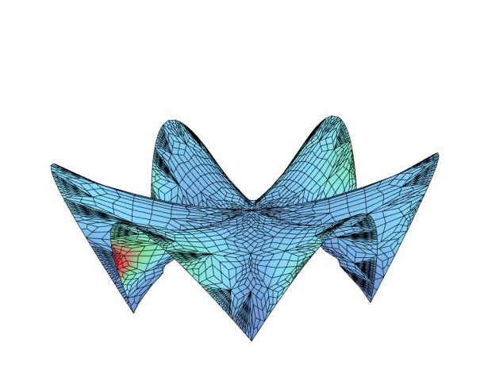
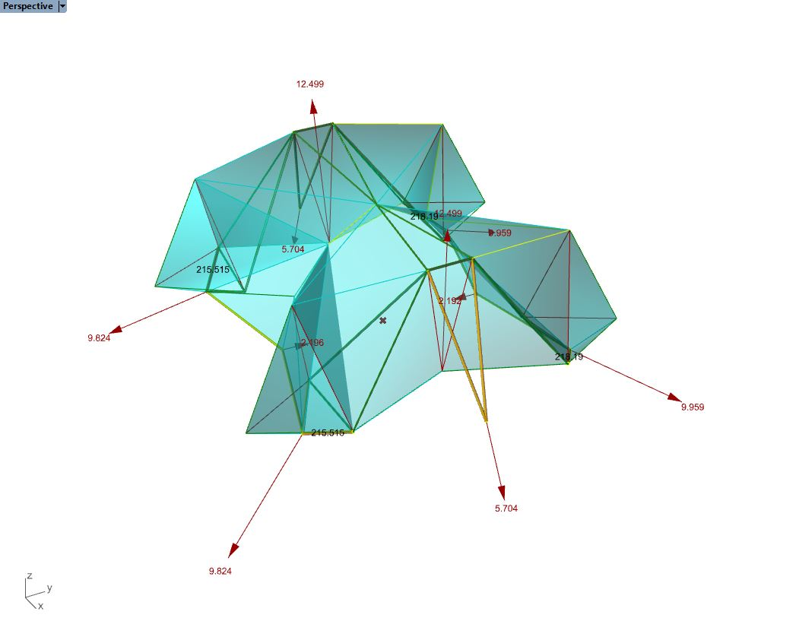
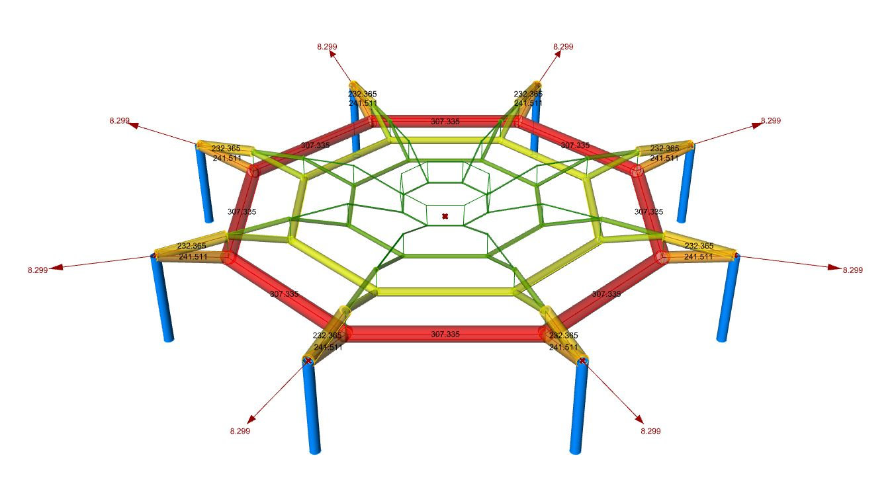
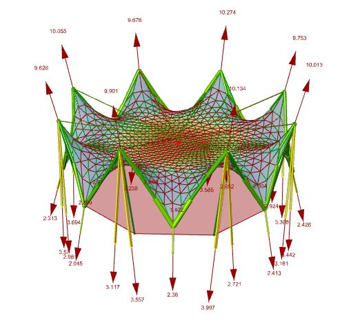
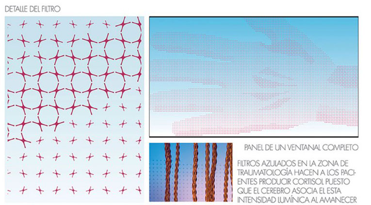
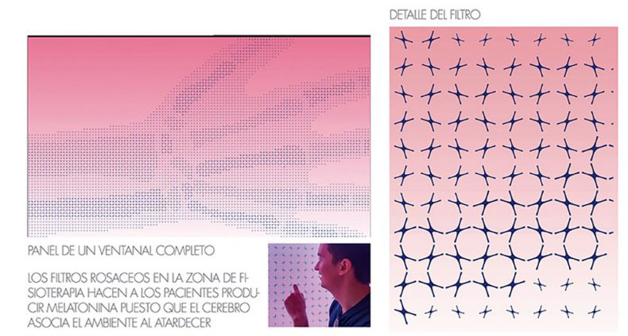
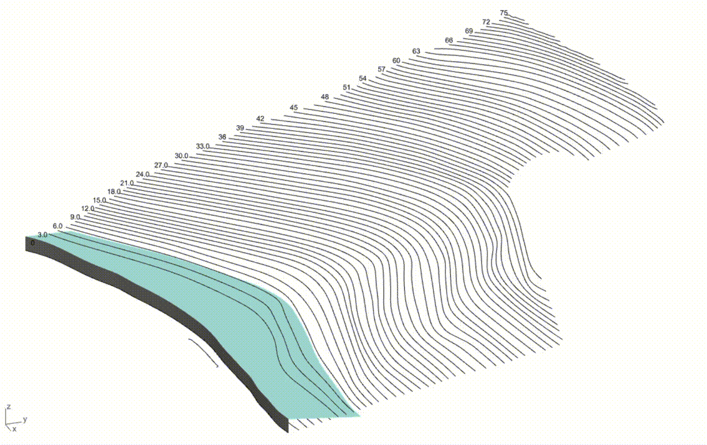

AOR
GRASSHOPPER

En segundo de carrera me interesé por el diseño paramétrico en Grasshopper e hice un curso en la UA con el profesor
Carlos Bañón. Desde entonces ha sido una herramiento muy utilizada por mí en muchos de los ámbitos que he manejado.
CÁLCULO ESTRUCTURAL Y OPTIMIZACIÓN




En mi TFM profundicé en el cálculo de diversas tipologías estructurales. Llegando a optimizar espesores, secciones,
materiales y formas.
CREACIONES VISUALES O ARTÍSTICAS


En 2015, a los alumnos de la asignatura de estructuras se nos presentó la oportunidad de
crear una pieza en homenaje a Eusebio Sempere. Fue una intervención física que analizaba y plasmaba los conceptos
generales y las ideas de la obra del autor. En mi caso, me encargué de controlar las variables del diseño, de modo
que además pudieramos sacar unas mediciones precisas de cada forma y cada barra para materializarlo.
En 2017 colaboré con María José Marcos en la creación de la clínica de Traumatología NEXUS8 en Murcia. Creé unos
vinilos para los grandes ventanales, que jugando con el tamaño y la forma de un pequeño cromosoma, se conseguían
los dibujos de dos brazos rodeando la clínica. Además, en el interior, también aparecen nuevos vinilos que dan privacidad
en las diferentes salas.




OTROS USOS
ANÁLISIS DE DESMONTES PARA TOPOGRAFÍAS Y CÁLCULO DE PENDIENTES Y LLUVIAS
